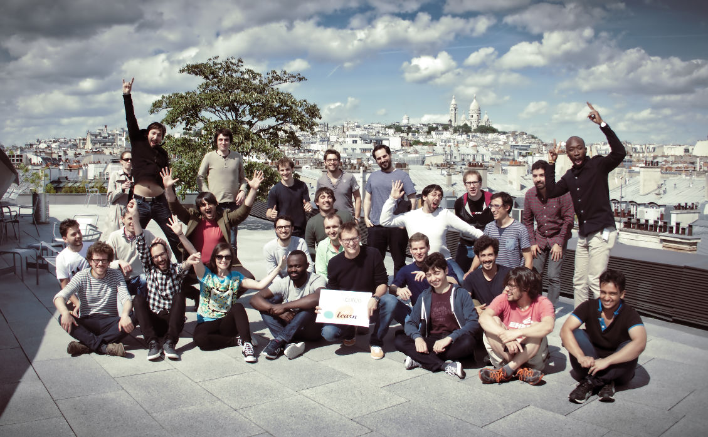

Two week ago, we held in Paris a large international sprint on scikit-learn. It was incredibly productive and fun, as always. We are still busy merging in the work, but I think that know is a good time to try to summarize the sprint.
A massive workforce
We had a mix of core contributors and newcomers, which is a great combination, as it enables us to be productive, but also to foster the new generation of core developers. Were present:
- Albert Thomas
- Alexandre Abadie
- Alexandre Gramfort
- Andreas Mueller
- Arthur Imbert
- Aurélien Bellet
- Bertrand Thirion
- Denis Engemann
- Elvis Dohmatob
- Gael Varoquaux
- Jan Margeta
- Joan Massich
- Joris Van den Bossche
- Laurent Direr
- Lemaitre Guillaume
- Loic Esteve
- Mohamed Maskani Filali
- Nathalie Vauquier
- Nicolas Cordier
- Nicolas Goix
- Olivier Grisel
- Patricio Cerda
- Paul Lagrée
- Raghav RV
- Roman Yurchak
- Sebastien Treger
- Sergei Lebedev
- Thierry Guillemot
- Thomas Moreau
- Tom Dupré la Tour
- Vlad Niculae
- Manoj Kumar (could not come to Paris because of visa issues)
And many more people participating remote, and I am pretty certain that I forgot people.
Support and hosting
Hosting: As the sprint extended through a French bank holiday and the week end, we were hosted in a variety of venues:
- La paillasse, a Paris bio-hacker space
- Criteo, a French company doing word-wide add-banner placement. The venue there was absolutely gorgeous, with a beautiful terrace on the roofs of Paris. And they even had a social event with free drinks one evening.
Guillaume Lemaître did most of the organization, and at Criteo Ibrahim Abubakari was our host. We were treated like kings during the whole stay; each host welcoming us as well they could.
Financial support by France is IA: Beyond our hosts, we need to thank France is IA who fund the sprint, covering some of the lunches, accomodations, and travel expenses to bring in our contributors from abroad (3000 euros travel & accomodation, and 1000 euros for food and a venue during the week end).
Some achievements during the sprint
I would be hard to list everything that we did during the sprint (have a look at the development changelog if you’re curious). Here are some
Quantile transformer, to transform the data distribution into uniform, or Gaussian distributions (PR, example):
Before
After

Memory saving by avoiding to cast to float64 if X is given as float32: we are slowly making sure that, as much as possible, all models avoid using internal representations of a dtype float64 when the data is given as float32. This reduces significantly memory usage and can give speed ups up to a factor of two.
API test on instances rather than class. This is to facilitate testing packages in scikit-learn-contrib.
Many small API fixes to ensure better consistency of models, as well as cleaning the codebase, making sure that examples display well under matplotlib 2.x.
Many bug fixes, include fixing corner cases in our average precision, which was dear to me (PR).
Work soon to be merged
- ColumnTransformer (PR): from pandas dataframe to feature matrix, by applying different transformers to different columns.
- Fixing t-SNE (PR): our t-SNE implementation was extremely memory-inefficient, and on top of this had minor bugs. We are fixing it.
There is a lot more of pending work that the sprint help moved forward. You can also glance at the monthly activity report on github.
Joblib progress
Joblib, the parallel-computing engine used by scikit-learn, is getting extended to work in distributed settings, for instance using dask distributed as a backend. At the sprint, we made progress running a grid-search on Criteo’s Hadoop cluster.
